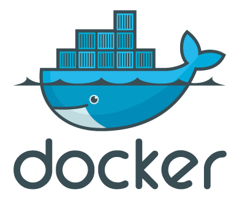
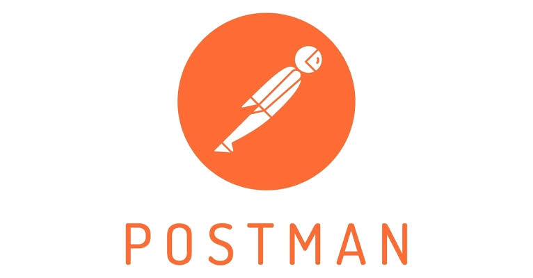
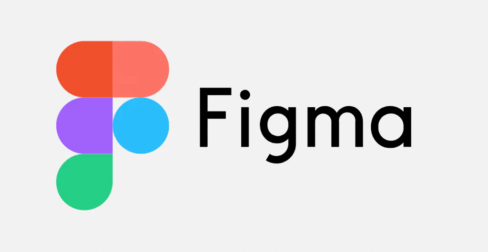

| Visual Studio Code |
Es uno de los editores de código fuente mas populares del mundo,
desarrollado por Microsoft,
soportando multiples lenguajes, extensiones y
cuenta con control de git integrado. |
Pagina de Visual Studio Code |
 |
| GitHub |
La plataforma de colaboración y control de versiones más grande del mundo basada en Git.
Permite alojar proyectos, revisar código y gestionar flujos de trabajo de desarrollo en equipo. |
Pagina de GitHub |
 |
| Docker |
Herramienta diseñada para facilitar la creación, el despliegue y
la ejecución de aplicaciones mediante el uso de contenedores, asegurando que
funcionen en cualquier entorno. |
Pagina de Docker |
 |
| Postman |
Una plataforma integral para la creación, prueba y documentación de APIs.
Permite a los desarrolladores enviar solicitudes HTTP y analizar
respuestas de manera rápida. |
Pagina de Postman |
 |
| Jira |
Herramienta líder de gestión de proyectos y seguimiento de incidencias,
ampliamente utilizada por equipos de desarrollo bajo metodologías ágiles
como Scrum y Kanban. |
Pagina de Jira |
|
| Stack Overflow |
La comunidad y plataforma en línea más grande para que los desarrolladores aprendan,
compartan sus conocimientos y resuelvan dudas de programación. |
Pagina de Stack Overflow |
|
| Figma |
Una potente herramienta de diseño de interfaces y prototipado colaborativo en la nube,
muy utilizada por diseñadores UI/UX antes de pasar a la
fase de programación. |
Pagina de Figma |
 |
| Node.js |
Un entorno de ejecución de JavaScript de código abierto y multiplataforma que permite a
los desarrolladores ejecutar código del lado del servidor de forma eficiente. |
Pagina de Node.js |
 |